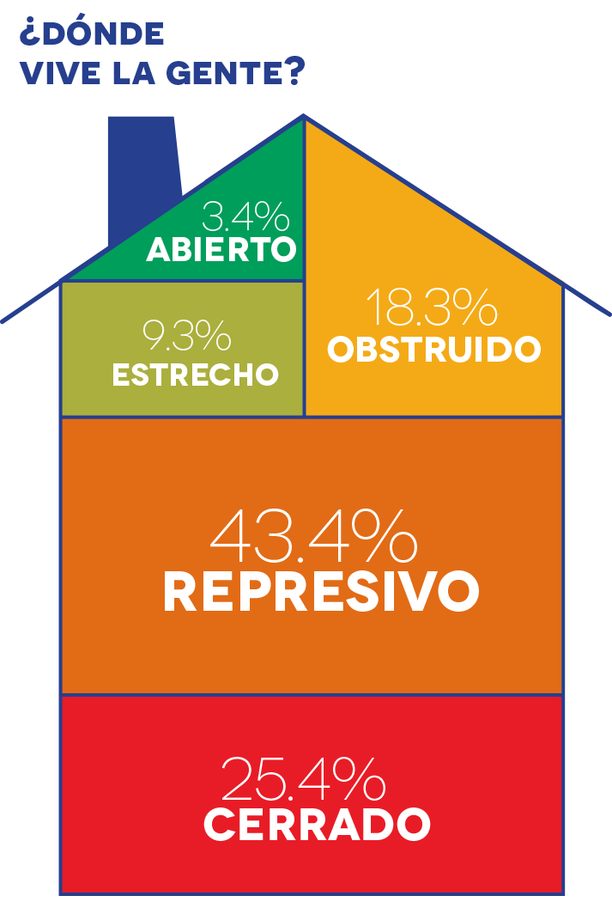
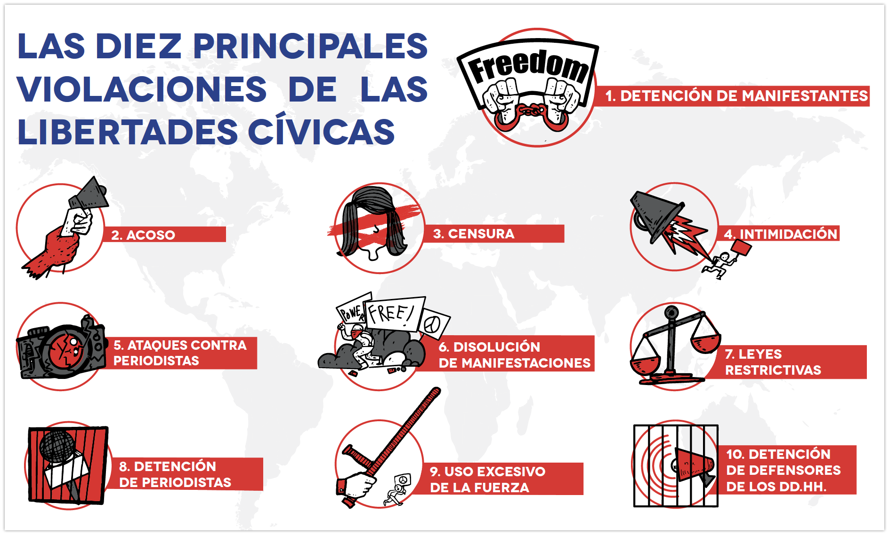

¿Cómo se encuentran las libertades cívicas en tu país?
11 países retroceden en el reporte global sobre libertades cívicas.
descarga el informe
- Un creciente número de personas viven en países ‘cerrados’, ‘represivos’ y ‘obstruidos’
- Los países que han sufrido retrocesos incluyen Estados Unidos, Filipinas, Guinea, Eslovenia e Irak
- Las principales violaciones incluyen: detención de manifestantes, censura y ataques a periodistas
- Las libertades de expresión, asociación y reunión pacífica se deterioraron durante la pandemia de COVID-19
Las libertades fundamentales de asociación, reunión pacífica y expresión continúan deteriorándose en todo el mundo, de acuerdo con un reporte global publicado por el CIVICUS Monitor, una investigación colaborativa que da seguimiento a las libertades fundamentales en 196 países. El nuevo reporte, El poder Ciudadano Bajo Ataque 2020, muestra que el número de personas que viven en países con restricciones significativas al espacio cívico continúa en aumento año con año.
 87% de la población del mundo vive ahora en países con un espacio cívico calificado como ‘cerrado’, ‘represivo’ u ‘obstruido’ -un aumento de más de 4% respecto al año anterior. Más de un cuarto de estas personas vive en países con la peor clasificación, ‘cerrado’, en los que regularmente se permite a actores estatales y no estatales encarcelar, herir y asesinar a personas por intentar ejercer sus libertades fundamentales. China, Arabia Saudita, Turkmenistán y otros 20 países caen dentro de esta categoría.
La pandemia de COVID-19 ha tenido un impacto grave en las libertades cívicas a nivel mundial. En tiempos de crisis, el espacio para el diálogo abierto y constructivo entre los gobiernos y la sociedad civil, así como el acceso a información oportuna y confiable, son fundamentales. Sin embargo, nuestra investigación demuestra que los gobiernos han tomado un rumbo diferente y están usando la pandemia como una oportunidad para introducir o implementar restricciones adicionales a las libertades cívicas.
Nuestros datos muestran que la detención de manifestantes y el uso excesivo de la fuerza en su contra son las tácticas más comunes utilizadas por las autoridades en el poder para restringir el derecho a la reunión pacífica. Si bien esta fue una violación común el año anterior, las autoridades han hecho uso de la pandemia como excusa para restringir mucho más este derecho. Censura, ataques a periodistas, y el acoso e intimidación contra defensores de derechos humanos fueron tácticas habituales documentadas durante el año.
“El uso de la detención como principal táctica para restringir las protestas solamente demuestra la hipocresía de los gobiernos que usan el COVID-19 como pretexto para reprimir protestas -es más probable que el virus se propague en espacios confinados como las cárceles”, declaró Marianna Belalba Barrero, Investigadora Principal sobre Espacio Cívico en CIVICUS. “Nuestra investigación refleja una profundización de la crisis del espacio cívico en todo el mundo y resalta cómo los gobiernos están utilizando la pandemia como una excusa para restringir mucho más los derechos, incluyendo a través de la aprobación de legislación para penalizar la expresión”.

Este año, once países han bajado y solo dos han mejorado su calificación. El CIVICUS Monitor está particularmente preocupado por las restricciones al espacio cívico en las Américas, donde cuatro países cayeron en su calificación: Costa Rica, Chile, Ecuador y los Estados Unidos. Asimismo, resulta alarmante el deterioro del espacio cívico en África Occidental, donde cuatro países -Costa de Marfil, Guinea, Níger y Togo- pasaron de ‘obstruido’ a ‘represivo’.
Existe una creciente preocupación sobre el declive de los derechos democráticos y civiles en Europa, donde Eslovenia también bajó su calificación. La caída en las condiciones del espacio en Asia sigue siendo motivo de preocupación, con Filipinas pasando de ‘obstruido’ a ‘represivo’. Medio Oriente y el Norte de África, una región donde la mayoría de los países se encuentran en la categoría de ‘cerrado’, agrega un país más a la lista, con Iraq pasando de ‘represivo’ a ‘cerrado’.
Con mejoras limitadas pero esperanzadoras, la República Democrática del Congo y Sudán mejoraron su calificación, pasando en ambos casos de ‘cerrado’ a ‘represivo’.
“En la mayoría de las regiones este año la historia alrededor de las libertades cívicas es sombría. En una época en la que los derechos cívicos son más necesarios que nunca para exigir cuentas a los gobiernos, el espacio para hacerlo es cada vez más restringido. Es crucial que los gobiernos progresistas trabajen de cerca con las y los defensores de derechos humanos y la sociedad civil para detener este declive y ejercer resistencia contra las fuerzas autoritarias”, afirmó Belalba Barreto.
Sin dejarse intimidar por las restricciones, las y los defensores de derechos humanos y la sociedad civil continúan operando, adaptándose y resistiendo. Las protestas masivas fueron a menudo un factor clave que generó cambios positivos. En Chile, las protestas masivas forzaron al gobierno a realizar un referéndum para el cambio de la constitución. En los Estados Unidos, algunos estados se comprometieron a desmontar o realizar reformas estructurales a sus fuerzas policiales luego de las protestas del movimiento Black Lives Matter. Mientras en Malawi, meses de protesta resultaron en una histórica repetición de las elecciones presidenciales y transición de poder.
Más de veinte organizaciones colaboran en el Monitor CIVICUS con el objetivo de proporcionar una base empírica para llevar a cabo acciones destinadas a mejorar el espacio cívico en todos los continentes. El Monitor ha publicado más de 500 actualizaciones sobre el espacio cívico en el último año, las que se analizan en El poder Ciudadano Bajo Ataque 2020. El espacio cívico de 196 países se clasifica como cerrado, reprimido, obstruido, estrecho o abierto, siguiendo una metodología que combina varias fuentes de datos sobre las libertades de asociación, reunión pacífica y expresión.